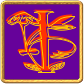

If you can see this box, your browser or internet
device may not fully comply with current Web Standards
This site has been designed with
Web Standards
compliance in mind. It conforms to XHTML 1.0 Transitional and CSS 2.0 and will
look its best when viewed in a browser that also complies with these standards.
However, care has also been taken to ensure that the content of this site will
remain accessible to anyone, regardless of which browser or internet device they
may be using to view it.

his
section contains a brief overview of each of the three campaign settings that
constitute the realms of Mystara:
The Known
World, The Savage Coast, and
The Hollow
World. It also touches, briefly, on other regions of the world of
Mystara which have been developed primarily by Mystaran Fans.
In addition to brief descriptions and region-specific rules for each region
found within those campaign settings, there is also a discussion of the eras
of Mystara - for there are several distinct time periods
in which a Mystara campaign may be set.
Quick Links into this file
Primary Regions of Mystara
The Known World
he Known World is located primarily on the northern
continent of Brun of the planet of Mystara. It is composed of the following
nations:
- The Empire of Alphatia [DotE,
WotI]
- A massive continent and its attendant territories ruled by wizards in
the year AC 1000. During WotI, Alphatia sinks into the sea and is presumed
destroyed.
- The Empire of Thyatis [DotE]
- A vaguely Romanesque empire that is nearly as extensive as its major
rival Alphatia.
- The Grand Duchy of Karameikos [GAZ1,
WotI, K:KoA]
- As of AC 1000, Karameikos is a massive domain ruled autonomously by
Stefan Karameikos, though he takes on the title "Duke" and gives his country
the name of "Duchy" to make it appear to potential enemies that it is more
closely allied with the Thyatian Empire than it really is. During the turmoil
caused by the Wrath of the Immortals, Stefan Karameikos formally announces
his country's independence from Thyatis, and redefines his country as the
Kingdom of Karameikos and, thus becomes its King.
- The Emirates of Ylaraum [GAZ2]
- A loose confederation of desert states or emirates, as they are known
locally, united solely by the teachings of the prophet Al-Kalim and his
dream of the Desert Garden. At some point long after WotI (e.g. AC 1200),
the Emirates remain neutral as the rest of the known world is overrun by
the Desert Master.
- The Principalities of Glantri [GAZ3,
G:KoM, PC4]
- A magocracy formed of a loose confederation of wizard dominated states.
Clerics are not allowed in to this nation which asserts the divinity of
mortals, specifically magic-wielding mortals. Glantri is possessed of major
infestations of Lycanthropes and the undead. During the WotI Glantri lost
a significant chunk of territory to humanoid invaders, only to later annex
all of the broken lands, and recognize these invaders as citizens.
- The Kingdom of Ierendi [GAZ4]
- An island chain, Ierendi is a hedonistic nation which serves as a pleasure
center for the rest of The Known World, with unusual attractions such as
"Safari Island", mysterious enclaves of magic users on "Honor Island" and
a King and Queen chosen annually based on their prowess in combat at arms.
Despite its unusual nature, it is also famed for having the best Navy in
all the Known World.
- Alfheim [GAZ5,
WotI]
- A kingdom of elves found in Canolbarth Forest, surrounded entirely by
the mercantile nation of Darokin. During the turmoil of the WotI, Alfheim
is overrun by their shadow-elven cousins and twisted into Aengmor.
- Rockhome [GAZ6]
- The ancestral nation of the Dwarves. A mountainous region of ice- capped
peaks, green valleys and large clear lakes riddled with extensive networks
of caves and tunnels in which the cave-loving dwarves make their home.
- The Northern Reaches (Ostland, Vestland and Soderfjord)
[GAZ7]
- A harsh land of rugged wilderness, marshes and dense forest. It is roughly
divided into three regions modeled on the Viking culture: the Kingdom of
Vestland, the Kingdom of Ostland and the Soderfjord Jarldoms.
- The Five Shires [GAZ8]
- The homeland of the halflings (or, as they call themselves, Hin). This
is a beautiful and fertile land of rolling hills and valleys divided into
five Shires. Each Shire is ruled by an elected Sheriff with the five Sheriffs
forming a council that rules the nation as a whole. Though a peaceful and
happy nation the halflings are more than capable of defending themselves.
They have faced many invasions from men and monsters over the years but
none have prevailed. The last serious invasion attempt was 1,100 years ago
and the halflings continue to maintain a strong army to defend their lands.
- The Minrothad Guilds [GAZ9]
- Another island chain, to the east of Ierendi, Minrothad is a seafaring
nation of traders, craftsman and guildsmen. A cosmopolitan society made
up of many different races, Minrothad is a plutocracy. The most important
thing to most of the people of Minrothad is money and trade, even religion
takes a back seat. Also interesting is that the human race is a minority
in The Guilds, having been decimated by their demihuman countrymen during
"The Silver Purge" —a nationwide defensive reaction to an epidemic of
the lycanthropy curse.
- The Broken Lands [GAZ10,
WotI, G:KoM]
- A region of blasted, wasted territory claimed only by hordes of savage
humanoids. As of AC 1000 the broken lands are loosely united under the orc
king Thar, though he does have some major political rivals active within
his own nation. During the Wrath of the Immortals, a giant meteor strikes
southern Glantri on the northern border of the broken lands. Humanoids swarm
in and occupy the great crater. Shortly thereafter, in what was a masterful
coup, Kol XVI manages to get Glantri to recognize the broken lands as the
Principality of New Monsterland with himself at the helm, neatly ousting
once-king Thar
- The Republic of Darokin [GAZ11]
- Darokin is a land of merchants and diplomats. Though known as a republic,
it is actually a plutocracy where only the wealthiest can run for election
and everyone lives by the "Golden Rule": "He who has the gold, makes the
rules". The nation is famed for its diplomatic expertise. Though the national
psyche abhors war and violence they more than make up for this with their
finesse at the negotiating table. The Darokin Diplomatic Corps is a powerful
part of the government, negotiating disputes and trade treaties, not only
on behalf of Darokin, but between other countries as well. The wealth is
spread more evenly here than other nations — Darokin's wealthiest people
are not so ostentatious as Thyatis' but Darokin's peasants are far better
off for they all know that they live in a land of equal opportunity, where
even the wealthiest "elite class" magnate can loose it all if the economy
sours, and even the lowest "copper class" peon, if he works hard enough
and long enough, can make his fortune.
- The Ethengarian Khanates [GAZ12]
- Based on the historical culture of the Mongols, the Ethengarians are
a hardy and warlike race of nomadic horse-warriors adapted to the harsh
environment of the steppes: an almost flat expanse of patchy and infertile
grasslands constantly lashed by winds from the surrounding mountains. Currently
united by a single Great Khan, the tribes have ceased their constant intertribal
warfare and have even opened up trade with other nations. United now, they
bide their time, confident that the world will soon tremble before the thundering
hooves of their warriors.
- The City of Stars (The Great Cavern City of the Shadow Elves)
[GAZ13]
- TBD
- The Atruaghin Clans [GAZ14]
- Based on the culture of the American Indian, the Children of Atruaghin
consist of a number of clans living in and around a vast magically created
plateau in the western region of the Known World. Each clan has its own
animal totem and its own unique culture and way of life.
- The Dreamlands [PC1]
- The magical nation of the fey, ruled by Titania and Oberon, it is neither
full in the world nor fully out of it. There are many access points found
throughout the Known World and beyond but in AC 1000, the largest number,
by far, are found near the "Good Magic" points in the Canolbarth Forest
of Alfheim. What becomes of these many entry ways into the Faerie Realms
after the events of the Wrath of the Immortals and the twisted creation
of Aengmor is unknown.
- Serraine [PC2]
- Flying over all the regions of The Known World and beyond, is the Flying
City of Serraine, a marvel of engineering and magic dominated by the Mystaran
sub-race of Sky Gnomes, but harboring a vast variety of races.
- The Sunlit Sea [PC3]
- The island nations of Ierendi and Minrothad are both situated within
the Sunlit sea, a nation of Tritons and Merrow which exists beneath the
waves, though few surface dwellers are aware of it's existence.
- Sindh and Jaibul [CoM]
- Sindh is a desert nation to the west of Glantri and the Atruaghin plateau
with a rigid caste system. Jaibul is an impoverished nation to the south
of Sindh which has, on at least one occasion, tried to take portions of
Sindh as its own via treachery. Sindh is the first nation to be overrun
by the Master of The Desert Nomads.
- The Plain of Fire [CoM]
- TBD
- The Divinarchy of Yavdlom [CoM]
- A blissful state with a caste system based on 'those who matter.' It
is ruled by seers.
- Ulimwengu [CoM]
- TBD
- The Heldannic Freehold [VotPA]
- A dark, gothic state ruled by the Heldannic Knights with an iron hand.
- Wendar [X11]
- A northern nation of isolationist elves.
- Norwold [CM1]
- A vast, sparsely populated, chilly wilderness of hills and mountains,
arctic bays and tundra. It is populated by aboriginal Heldann, and Thyatian
and Alphatian settlers.
Back To TOP
The Savage Coast
TBD
Back To TOP
The Hollow World
TBD
Back To TOP
Other Regions of Mystara

n addition to the above three regions of
Mystara that were fully developed as settings by TSR,
there are a few other regions around the world of Mystara
that baseline sources mention, in one way or another, but that were never taken
beyond a few sentences here and there. However, many of these regions have been
developed far beyond their vague and insubstantial origins in the deft hands
of faithful Mystara fans. This last section details
some of the regions in this category.
Davania
TBD
Back To TOP
Skothar
TBD
Back To TOP
Eras of Mystara
TBD
Back To TOP